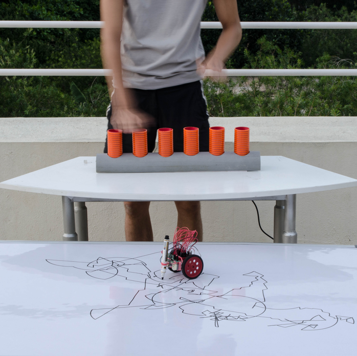
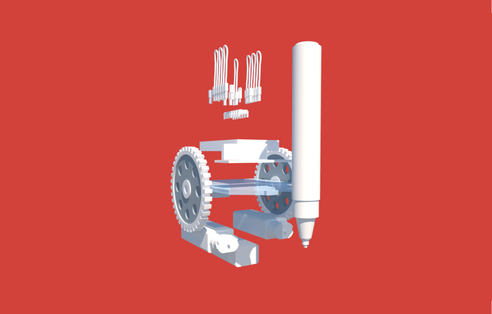

- interactiondesign
- research
- music
- installation
- computing
- productdesign
- dataviz

User interacting with the apparatus




This is one of the final visualization done by drawdio to the tune played by the user. The drawdio's turns are limited to its radius and hence it is geomentric.
This project aims at the artistic side of design solutions that makes playing an instrument more immersive.